김예린|본사영업 IB
성장 단계에 맞춰 기업에 적절히 자금이 흘러가도록, 숫자부터 정확히 읽습니다.
재무제표를 주석과 함께 읽고, 공시로 발행 과정을 따라가며 기업의 자금조달을 돕는 일을 준비해 왔습니다. 입사하면 증권신고서와 심사자료의 숫자를 원자료와 맞춰 보는 일부터 맡겠습니다.
- #숫자는_원천부터REFLO 결과물 수치를 DART 원자료와 하나씩 대조
- #처음_해_보는_일도_끝까지AI를 활용해 처음 해 보는 가치평가 모델을 나흘 만에 제작
- #재무제표를_주석까지신용분석사 · 투자자산운용사 · 재경관리사 · CPA 준비 3년
- 학점
- 4.33 / 4.5
- 금융 자격
- 3종
- KDA 교육
- 568시간
- 팀 프로젝트
- 2건 1위
- TOEIC
- 885
ECM · DCM 기업의 자금조달을 돕는 두 길에서 쓰일 준비
ECMIPO · 유상증자 등 자본시장을 통한 성장 자금
- 01
자본시장을 읽는 기초
투자자산운용사TESAT 1급
증권의 종류 · 가치평가 · 포트폴리오 이론을 금융상품 단위로 정리
- 02
기업을 숫자로 분석하고 제안
REFLO 가치평가 모델발표 유인물 총괄
목표주가 → PER → EPS → 매출 역산과 민감도 분석으로 기업 가치를 설명
- 03
기한 안에 끝까지 수행
REFLO · 5팀 중 1위
결과물을 DART와 대조하며 개발 담당과 같은 기준으로 수정을 반복
DCM원화 · 외화채권 발행을 통한 기업 자금조달
- 01
신용을 읽는 눈
신용분석사
재무제표를 주석과 연결해 읽고 안정성 · 수익성 지표로 상환능력 판단
- 02
조달 과정을 문서로 확인
DART 공모 회사채CPA 재무관리 3년
증권신고서 → 증권발행실적보고서까지 발행 과정을 따라가며 조달 구조 파악
- 03
상대의 언어로 묻고 설명하기
현직자 인터뷰회계원리 우수 튜터
인터뷰 질문지 작성과 섭외 · 새내기 2명에게 6회 회계원리 설명
TIMELINE 간격은 기간 비율이 아니라 순서 기준입니다 · 굵은 축이 2026년
2017.03~2020.02
대원외국어고등학교
중국어과 · HSK 5급
2022-1
Dean's List
15학점 전 과목 A+ · 재무관리 · 투자론 · 화폐금융론
3년 · 2024~2026
공인회계사 시험 준비
회계 · 세법 · 재무관리 · 재무관리 공식 한 장 · 세법 구조도
2026.05
투자자산운용사 · 재경관리사
KDA 종일 수업과 병행 · 5/21 · 5/22
2026.075팀 중 1위
REFLO
리서치 자동화 AI 서비스 · 가치평가 모델 · 결과물 검증
상세 ↓
2017
2020
2022
2024
2025
2026
2020.03
성균관대학교 입학
경제학 · 경영학(복수전공)
2022.03~12
경제토론학회 SEDA
세미나 17회 · 발제문 3건 · 우수 발제원
내부자거래 · 증권거래세 폐지 · 대출만기 연장
2025.04~06
회계원리 우수 튜터
성균튜터링 · 새내기 2명 · 6회
2026.06
신용분석사
재무제표를 주석과 연결해 읽고 지표 직접 계산
2026.085팀 중 1위
DAY JA VIEW
테마주 이벤트 스터디 서비스 · 기획 · UI/UX · 발표자료
상세 ↓
성균관대학교경제학 · 경영학 · 4.33 / 4.5 · 2026.08 졸업
CPA 준비3년
키움 디지털 아카데미 4기568시간 · 2026.05~08
2022 · 학생회 COUNT 재정국 차장 · 밴드 드럼
← 옆으로 넘겨 보기 →
PROJECTS 키움 디지털 아카데미 · 두 프로젝트 모두 5팀 중 1위
2026.075팀 중 1위
REFLO · 리서치 자동화 AI 서비스 — 기업 분석 · 숫자 검증 담당
- 배경
- 애널리스트 보고서 작성 부담을 줄이는 업무혁신 서비스
- 역할
- 가치평가 모델 · 결과물 검증 · 서비스 흐름 설계 · 6인 팀
- 한 일
- AI를 활용해 처음 해 보는 가치평가 모델을 나흘 만에 직접 제작
대덕전자 · ISC · 목표주가 → PER → EPS → 매출 역산 · 민감도 분석
- 결과물 수치를 DART 원자료와 대조 → 오류 전달 · 수정 반복 · 발표 유인물 총괄
- 목표 배수 · 할인율 등 판단 값은 입력으로 열어 두고, 셀을 3색으로 나눠 개발 담당과 기준 공유
- 애널리스트 인터뷰 2건을 팀에 제안해 대면 진행 → 반도체 제조업으로 분석 범위 축소
- 결과
- 5팀 중 1위 · 유인물을 먼저 받아 본 심사위원에게서 "이런 것을 원했다"는 평
- 배운 점
- 재무관리 이론이 실제 가치평가에서 어떤 계산 흐름으로 쓰이는지 확인했다
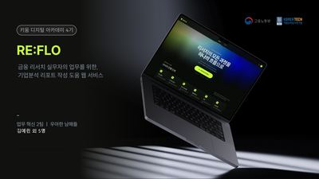
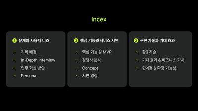
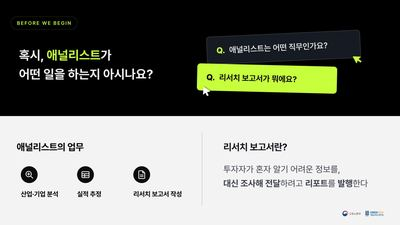
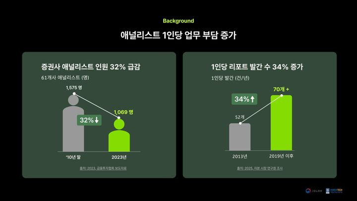
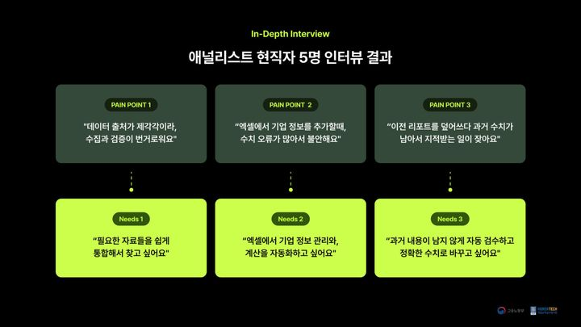
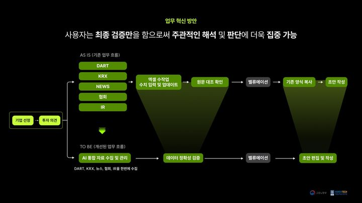
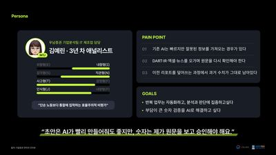
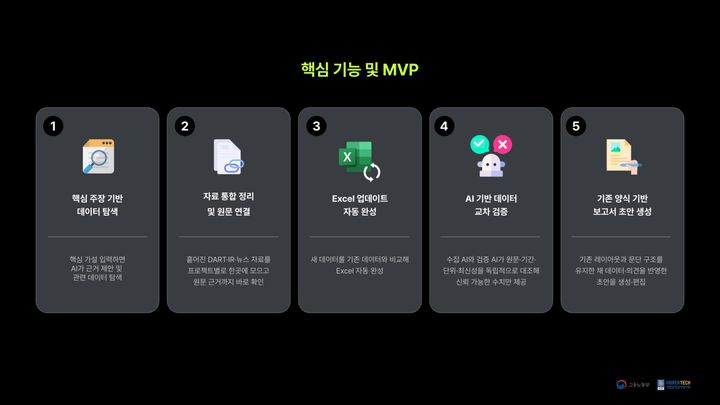
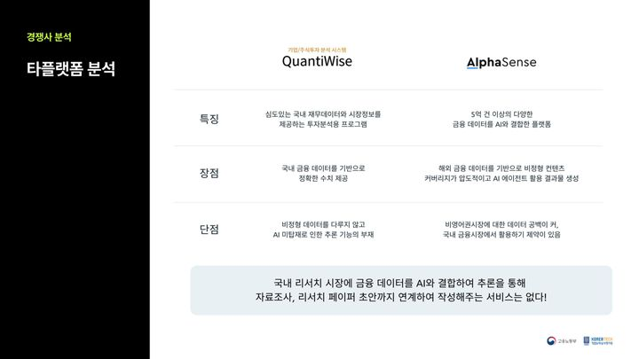
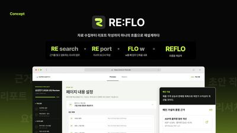
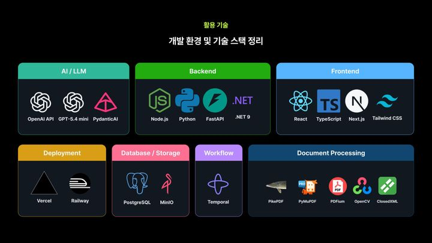
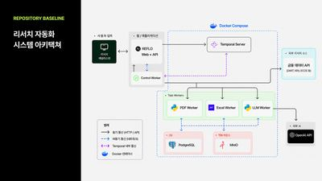
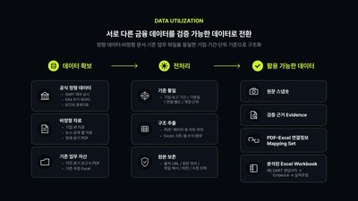
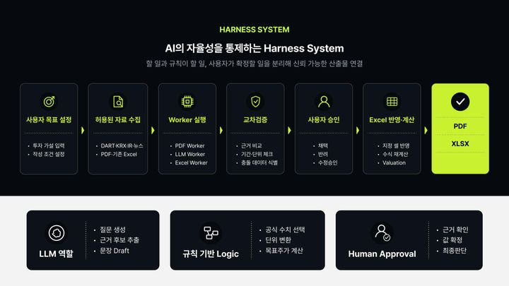
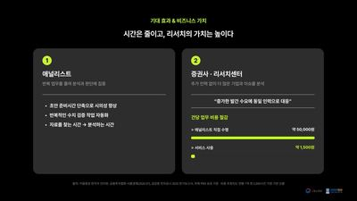
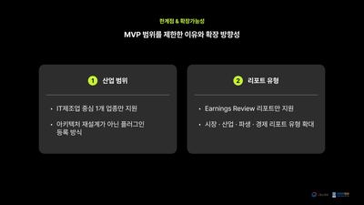
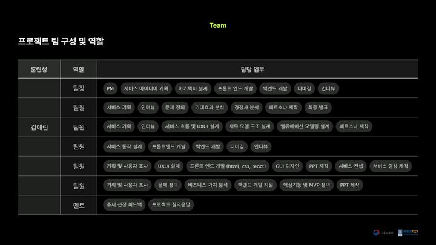
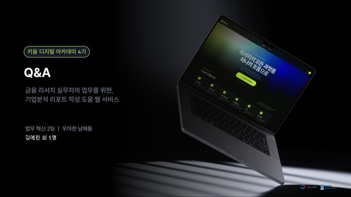
발표자료 18장 · 옆으로 넘겨 보기
2026.085팀 중 1위
DAY JA VIEW · 테마주 이벤트 스터디
- 개요
- 오늘 오른 테마의 소재와 과거 비슷한 사건 때의 주가 반응을 함께 보여 주는 서비스 · 5인 팀
- 역할
- 서비스 기획 · UI/UX · 발표자료 · 사건 단위로 묶어 보는 이벤트 스터디 방법론 제안
- 결과
- 5팀 중 1위 · 키움증권 리테일 부문 현직자 심사 · 프로토타입 ↗
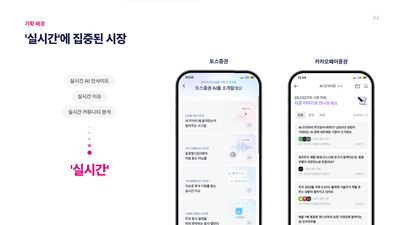
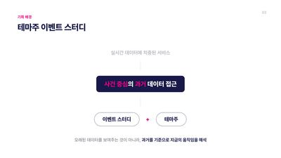
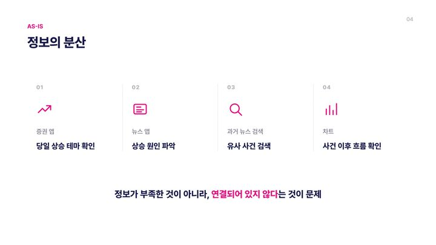
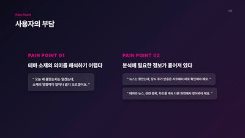
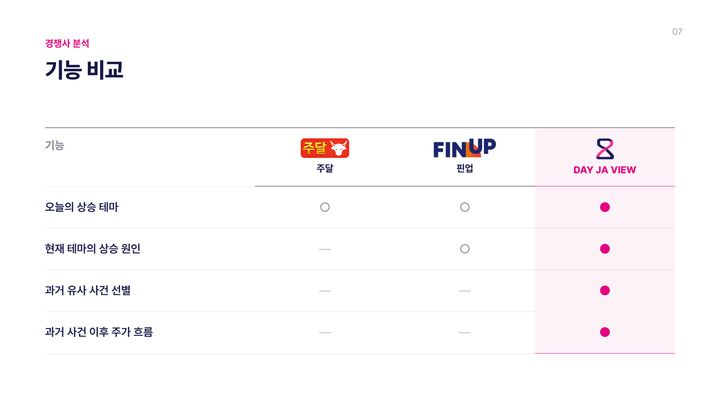
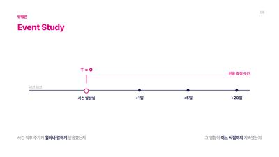
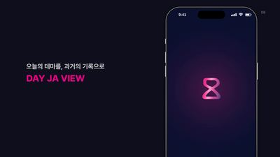
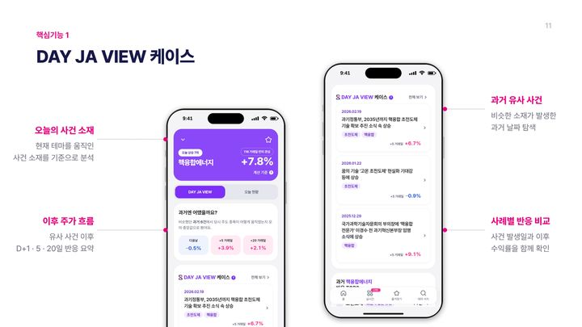
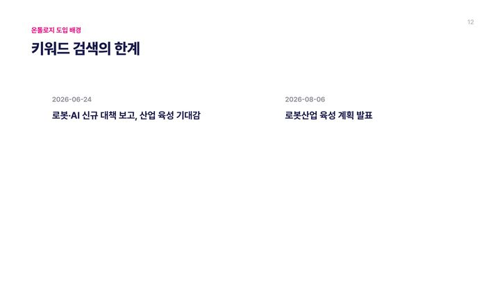
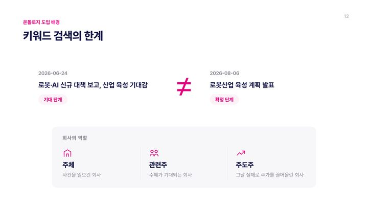
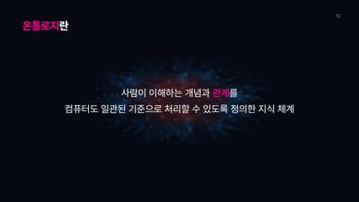
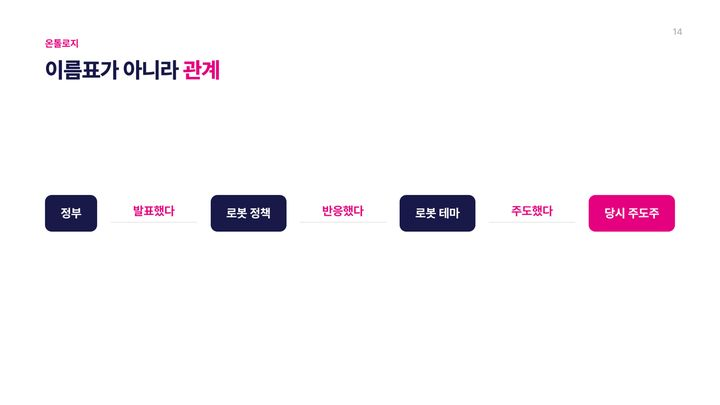
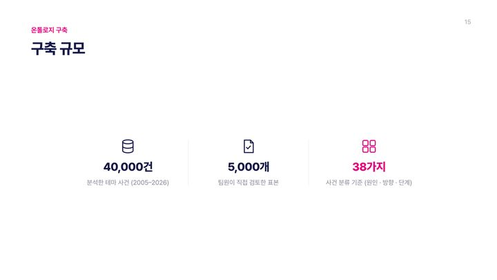
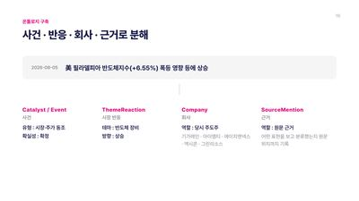
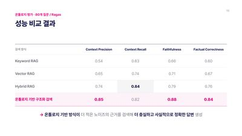
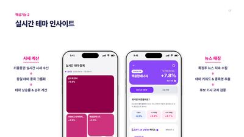
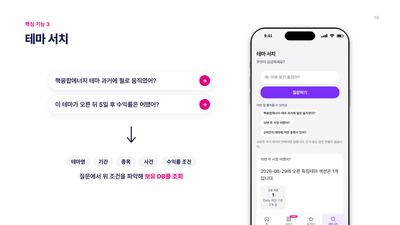
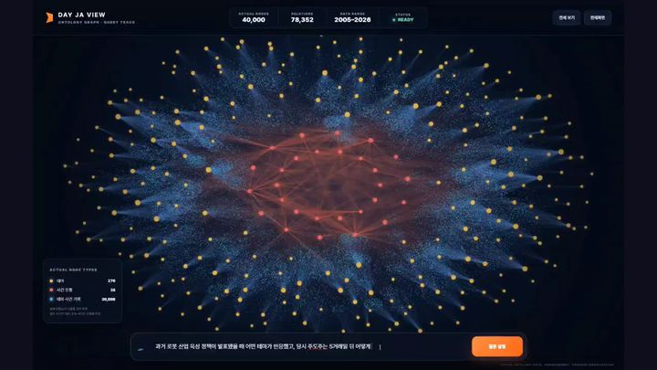
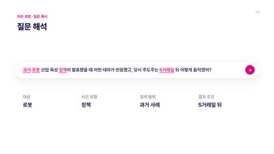
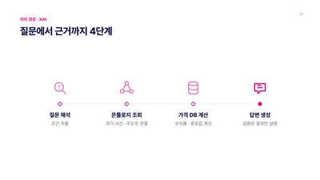
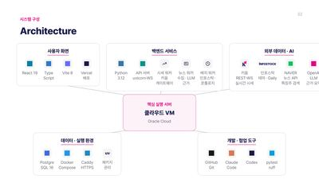
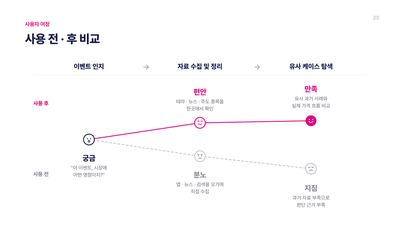
발표자료 23장 · 옆으로 넘겨 보기
SKILLS 숙련도 대신 어디에 썼는지로 적었습니다
- 금융 분석
-
재무제표 분석신용분석사 · 주석 연결 · 안정성 · 수익성 지표
가치평가 로직 이해 및 구현PER 역산 · 민감도 분석 (REFLO)
회계 · 세법재경관리사 · CPA 준비 3년
공시 독해증권신고서 → 증권발행실적보고서
- 데이터
-
Excel가치평가 모델 · 민감도표
Pythonpandas · scikit-learn 신용점수 예측모형 실습
SQLPostgreSQL 스키마 설계 · Supabase 연동 실습
- 도구
-
DART 전자공시원자료 대조 · 자금조달 공시
생성형 AI처음 해 보는 모델을 직접 만드는 데 활용
- 언어
-
TOEIC 8852026.04
증권신고서의 숫자 하나부터 정확히 맞추며 배워 나가는 신입이 되겠습니다!